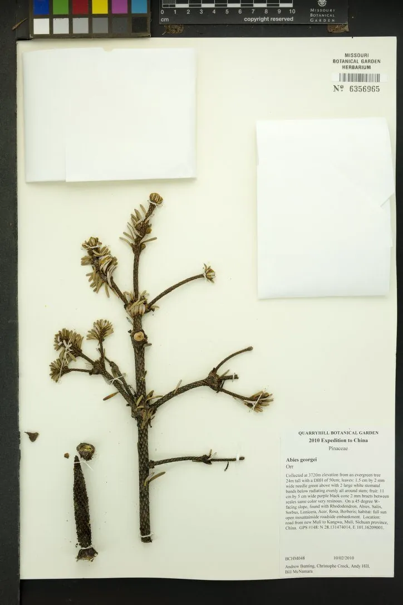

乔木 · 植物界
长苞冷杉 Abies georgei

松科冷杉属常绿乔木，苞鳞明显外露、球果直立，分布于滇西北与川西高山，是亚高山寒温性针叶林的主要树种。
- 分类
- 门裸子植物门纲松柏纲目松柏目科松科属冷杉属
- 栖息环境
- 海拔 3000–4200 米的高山地带，喜冷凉湿润、耐寒耐瘠
- 地理分布
- 中国云南西北部、四川西南部与西藏东南部，为中国特有种
- 保护级别
- 中国国家二级保护野生植物；分布区狭窄，受采伐与放牧影响
物种志
长苞冷杉为常绿乔木，高可达 25 米，树皮灰褐色并纵裂，小枝密生短柔毛。叶片条形、扁平，长 1.5–3 厘米，先端钝或微凹，叶背有两条白色气孔带。雌雄同株，球果直立、圆柱形，长 6–11 厘米，成熟时暗褐色，苞鳞显著外露并反曲，种鳞肾形，种子具翅。
本种分布于云南西北部、四川西南部与西藏东南部，生于海拔 3000–4200 米的高山地带，常与川滇冷杉、红桦等组成寒温性针叶林，是滇西北高山森林的主要建群种之一。它喜冷凉湿润气候、耐寒耐瘠，对土壤要求不严，但生长缓慢、天然更新差。木材可供建筑与纸浆，林冠能截留云雾、涵养水源。因分布区狭窄、过度采伐与放牧影响，野生资源受到威胁，被列为国家二级保护野生植物。
形态与习性
- 株高可达 25 米，树皮灰褐色纵裂
- 花期5 月，雄球花下垂
- 球果成熟10 月，球果直立、苞鳞外露
- 光照喜光，也能耐一定庇荫
- 水分喜湿润，高山云雾带生长良好
- 海拔3000–4200 米的高山林线附近
- 主要用途水源涵养、建筑用材与纸浆
趣味知识
- 长苞冷杉的苞鳞长而外露、向后反曲，是它区别于其他冷杉的显著特征。
- 它生长的海拔常在 3000 米以上，是滇西北高山林线附近的重要树种。
- 冷杉的球果直立生于枝顶，成熟后种鳞与种子一起脱落，与云杉不同。
- 高山冷杉林是下游森林与村寨的重要水源保障。